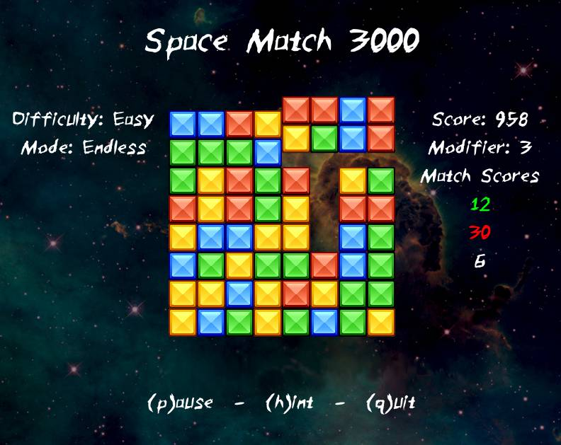

Projects
Here are some of my favourite projects. The ones I had the most fun making, were the most useful, or I learned something from.
Space Match 3000
Space Match is a very simple match 3 game. This is the first project I ever fully completed. It was really exciting to have something that looked like a real program, albiet a simple one. I finished it before I had decided to do a CS program full time and the fun I had was a big part of my decision.

I learned the lua programming language and how to work with a framework/library using love2d. I also learned that a programs architecture is a tricky and important part of the process. It is often easy to make things work, not as easy to do it in a way that makes building and extending the app pleasant. For this particular project I learned about the state pattern and used a simple vesion off it to split up game states into self contained logical units. Of course, I still barely new what I was doing so the code code is still not as clean as it could be.
The project can be found on my GitHub here (add link). To see it in action a
version converted for the web can be played here (add link).
Note that the UI is a bit
clumsy. Menus are navigated with the keyboard by pressing keys in brackets. I.e.
(n)ew game is activated with n. However, during the game the mouse is used
to select blocks to swap. It was not built with the web in mind so things like
the high score don’t really work.
More About Me
I love programming!
Better add more to make sure everyone knows I am not a robot 😉
Education
List Education
Work Experience
List work experience